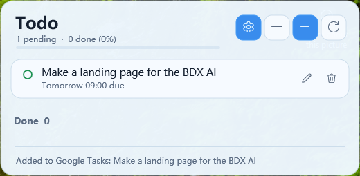
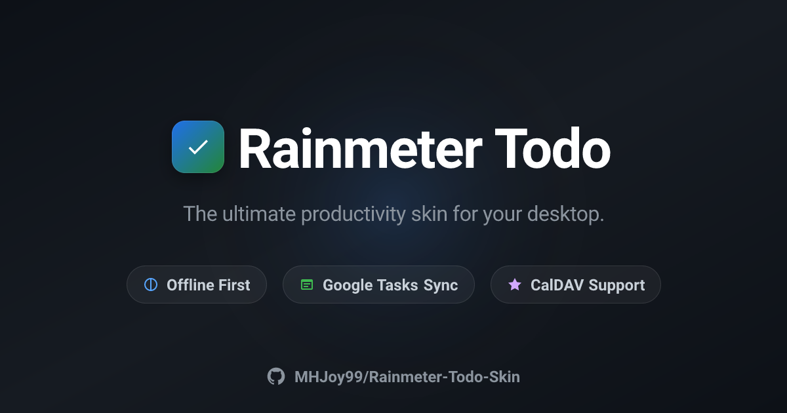

Local-first tasks
Every todo lives in a local tasks.json. Add, edit, delete and toggle todos instantly, fully offline.
v1.5.0/MIT license/Windows 10 & 11/Rainmeter 4.5.26+
Todo Board is a local-first todo widget for your Windows desktop. Click a todo and it becomes a real Google Task, signed in once with OAuth 2.0. No Google Cloud project needed.
Free and open source. Not affiliated with Google or Rainmeter.
Features
Everything below comes straight from the project README. The board is local first; Google is only contacted when you click a todo that has no custom link.
Every todo lives in a local tasks.json. Add, edit, delete and toggle todos instantly, fully offline.
Clicking a todo with no custom link creates a real task in your Google account through the Google Tasks API.
A todo with a date (YYYY-MM-DD) syncs as an all-day task. Undated todos are created without a due date.
Settings, Google Tasks, Sign in with Google. A built-in OAuth 2.0 client means no Google Cloud project, though you can bring your own.
OAuth tokens are encrypted with Windows DPAPI for your user, refresh automatically, and revoked grants are detected.
A todo with a custom link opens that link normally and is never sent to Google.
The host is process-DPI aware and scales the tile and dialogs automatically. UI scale is auto or 50% to 200% on the About tab.
Check for updates on the About tab. It installs the newest GitHub release and keeps tasks.json, ui-scale.txt and your secrets.
Import 1 to 20 papers per day with 1 to 90 days of cache retention.
Score titles and abstracts with your own prompts. Only called after you confirm a manual refresh.
Share paper scoring results between devices through a File Browser account.
Optional Tencent Cloud translation of paper titles to Chinese. Credentials are DPAPI-encrypted.
Installed by the same package; it can sync with any CalDAV server.
How it works
Rainmeter alone cannot handle HTTPS callbacks or encrypted token storage, so a small C# host app, TodoHost.exe, performs the OAuth 2.0 desktop flow, calls the Google Tasks API and stores tokens.
| You do this | What happens |
|---|---|
| Click a todo with no custom link | Creates a Google Task. All-day if the todo has a date, no due date otherwise. |
| Click a todo with a custom link | Opens the link. No Google Task is created. |
| Tick the checkbox | Marks the todo complete on the board only. It does not change an existing Google Task. |
| Add with the + button | Saved locally to tasks.json. It only reaches Google Tasks when you click the todo. |
Good to know. Sync is one-way: tasks are written to Google Tasks and not read back. Every click creates a new task and clicks are not deduplicated, so click once. Todos without a date show in Google Tasks but not on the Google Calendar grid.
All todo data lives in @Resources\tasks.json. Nothing is stored in the cloud except the tasks you deliberately create in Google Tasks.
Google tokens (gtasks.secret), translation, file-sync and CalDAV credentials are all stored encrypted with Windows DPAPI under your user account.
The updater contacts GitHub only when you click Check for updates. Otherwise network use is limited to the services you configure.
Screens
Screenshots below are the project's own images from the repository.


The all-English Todo settings dialog groups everything into tabs:
Quick start
The board works fully offline as soon as it is loaded. Connecting Google Tasks is optional.
Todo-Skin-v1.5.0.rmskin (installs the Todo and Calendar skins), or extract Todo-Skin-v1.5.0.zip and copy Skins\Todo (and Skins\Calendar) into your Rainmeter skins folder, e.g. Documents\Rainmeter\Skins.C:\Windows\Microsoft.NET\Framework64\v4.0.30319\csc.exe /nologo /target:winexe /optimize+ /r:System.Web.Extensions.dll /r:System.Windows.Forms.dll /r:System.Drawing.dll /r:System.Security.dll /out:TodoHost.exe backend\Common.cs backend\Todo*.csSign-in opens the Google consent page for the scope https://www.googleapis.com/auth/tasks. Google then redirects the browser to http://127.0.0.1:8392/, where the host app stores your tokens. Prefer your own OAuth client? Drop a gtasks-client.json into @Resources; see the setup guide.
{
"id": "local_1725300000000",
"title": "Ship v1.0",
"target": "",
"note": "Announce on the forum.",
"labels": ["work"],
"completed": false,
"source": "local",
"due_at": "2026-08-05T00:00:00+09:00"
}| File in @Resources | Purpose |
|---|---|
tasks.json | All todo data |
gtasks-client.json | Optional own OAuth client (secret, never commit) |
gtasks.secret | Encrypted token; delete it to reset sign-in |
ui-scale.txt | UI scale multiplier |
FAQ
No. It creates real Google Tasks, not Google Calendar events. A todo with a date is created as an all-day task (due date YYYY-MM-DDT00:00:00.000Z), which then appears in the Google Calendar Tasks layer and at tasks.google.com. A todo without a date is created without a due date.
No. Since v1.5.0 the host app ships with a built-in OAuth 2.0 client, so one-click sign-in works out of the box: open Settings, then the Google Tasks tab, then Sign in with Google. Bringing your own client is optional: place a gtasks-client.json file in the skin's @Resources folder and it takes precedence over the built-in one.
If the todo has a custom link, the link opens in your browser and nothing is sent to Google. If it has no custom link, TodoHost.exe calls the Google Tasks API and creates a real Google Task: all-day if the todo has a date, with no due date otherwise.
Yes. Todo Board is local-first: every todo lives in a local tasks.json file, and adding, editing, deleting and toggling todos all work offline. Google is only contacted when you click a todo that has no custom link. A Google account is only needed for that optional sync.
Tokens are encrypted with Windows DPAPI under your Windows user account and stored locally in @Resources\gtasks.secret. They refresh automatically, and revoked grants are detected and cleaned up. Use Sign out on the Google Tasks tab to remove the saved account.
No. Sync is one-way: tasks are written to Google Tasks but are not read back into the skin. Ticking a todo's checkbox marks it done on the board only; it does not change the Google Task. Each click on a todo creates a new Google Task and clicks are not deduplicated, so avoid clicking the same todo twice.
TodoHost.exe performs the OAuth 2.0 desktop flow with its loopback redirect on port 8392, calls the Google Tasks API, scores papers and stores tokens encrypted. Rainmeter alone cannot handle HTTPS callbacks and encrypted token storage reliably. The source is in the repository's backend folder and builds with the csc compiler that ships with Windows.
Windows 10 and Windows 11 with Rainmeter 4.5.26 or newer. The included TodoHost.exe uses the .NET Framework 4.x runtime that ships with Windows. The latest version is 1.5.0 and the project is MIT licensed.
A daily arXiv paper feed, optional DeepSeek scoring of titles and abstracts (only called after you confirm a manual refresh), file-server sync of scoring results through a File Browser account, optional Tencent Cloud title translation, and a companion Calendar skin that can sync with a CalDAV server. All of these are optional; the todo board works without them.